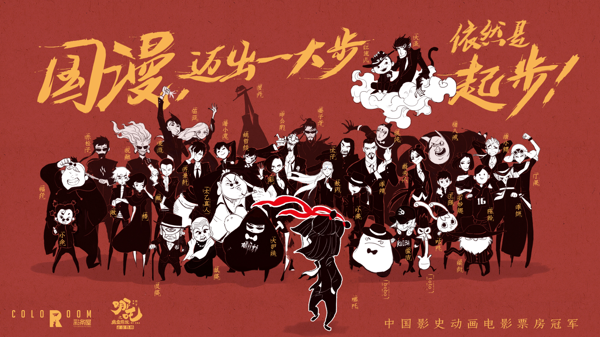

Historical Moments of Chinese animated films
On July 27, 2021, after watching the Chinese animated film White Snake 2, Zheng Chunyu posted a Weibo immediately.
“I’ve just finished watching White Snake 2... It’s even better than White Snake 1! Everyone please go and watch it!!!!” Zheng wrote on her Weibo.
22 years old Zheng Chunyu used to be a fan of Japanese anime. In recent years, surprised by the quality of Chinese animation, Zheng soon became a fan of Chinese animated films. “My favourite Chinese animated film should be White Snake 2. I love the imagination and quality of the work. For me, White Snack 2 is by far the best film of Light Chaser Animation Studio.”
Based in Beijing, the Light Chaser Animation Studios mentioned by Zheng is one of the highest-grossing animated film studios in China. It was founded in March 2013 by Gary Wang, the founder and former CEO of Tudou.com, a Chinese internet video website. Light Chaser Animation Studios has produced six animated feature films since 2015, grossing of more than 1.6 billion Chinese Yuan in Chinese Cinema by 2021.
The first three films of Light Chaser Animation Studios, Little Door Gods (2015), Tea Pets (2017) and >Cats and Peachtopia (2018), are mostly targeting children and families. The shift of Light Chaser came in its first collaboration with Warner Bros. Pictures. In 2019, Light Chaser and Warner Bros released White Snake, an animated film featuring a romance story between a snake spirit and a human. The story and characters were based on a Chinese traditional folktale, Legend of the White Snake. This film, targeting teenagers and young adults, bring the first huge box office success to the studio, grossing 468 million Chinese Yuan.
Light Chaser then started to produce more animated films targeting young adults audiences, based on Chinese folktale and myths: New Gods: Nezha Reborn (2021), White Snake 2 (2021), and the coming new film New Gods: Yang Jian in 2022.
With the success of White Snake, the market had a high expectation of the performance of White Snake 2. According to the online movie ticket selling platform Maoyan box office, White Snake 2 was screened more than 154 thousand times on its first day of release, taking up 41.4% of Chinese cinema screens on July 23. It became the highest first-day screening rate of a Chinese animated film in Chinese cinemas.
The final box office of White Snake 2 was 580 million Chinese Yuan, becoming the new best of Light Chaser Animation Studios. White Snake 2 is not the first Chinese animated film that get people’s attention. Audiences like Zheng first started to realize the potential of Chinese animated films in 2015, with the release of Monkey King: Hero is Back (2015).
Directed by Tian Xiaopeng, Monkey King created a new record for the box office of animated films in China, a total of 954 million Chinese Yuan. Before 2015, the top 10 grossing Chinese animated films are mostly targeting Children. The success of Monkey King showed the potential of different forms of animation, that would attract audiences of all ages. It was the highest-grossing animated film in China for one year. The record was surpassed by the 2016 films Zootopia and Kung Fu Panda 3 made by the United States.
The producer of Monkey King, Lu Wei, told reporters from the Economic Daily that the box office performance was way beyond their expectations. “The support from the audience makes us more confident about our film,” Lu Wei said, “Seeing the success of this film, the artist, the investors, and the audience will have more confidence in the Chinese animation industry.”
The unexpected performance of Monkey King brings stated the emerges of more animated films project. In China, the film scripts that have not been put in the archival files of the China Film Administration shall not be shot into films, and the films that have not passed the examination shall not be issued, projected, imported or exported. All the films that passed the examination of the China Film Administration would be listed publicly on its official website. According to the data from China Film Administration, the number of new animated films that were allowed to be produced in 2015 and 2016 has a huge growth after the release of Monkey King on July 10, 2015.
The next historical moment for Chinese animation was the exceptional box office success of Ne Zha (2019), a film by director Jiaozi. Grossing nearly 5 billion Chinese Yuan during its three-month-long screening, the box office of Ne Zha is about 5 times of Monkey King’s in 2015. Following the 5.7 billion Chinese yuan box office of Wolf Warrior 2, Ne Zha has been the second most grossing film in Chinese history for more than a year.
Picture: A poster of Ne Zha and other characters from Chinese animation. Posted by Horgos Coloroom Pictures to celebrate the historical record of Ne Zha’s box office. Source: Weibo
Xinhua Daily commented on the success of Ne Zha as having “a great significance for the rising of Chinese animation, opening new possibilities for the whole Chinese film industry, which show an ambitious attempt to build a ‘Cinematic Universe’ in China.”
The production company of Ne Zha, Horgos Coloroom Pictures, used to have a trailer for the next movie at the end of their films. The bonus scene of Ne Zha was a short trailer of the film Jiang Ziya, another fantasy animated film of Horgos Coloroom released in 2021. The two bonus scenes of Jiang Ziya, are the trailer of director Tian Xiaopeng’s new film Deep Sea, and an unrevealed film featuring another Chinese Mythical character Yang Jian. Ne Zha, Jiang Ziya and Yang Jian are all characters from Investiture of the Gods, a Chinese mythology novel from the 16th century. The similar background of these characters and the close relationship between these films remind the audience of the superhero movies from Marvel Universe, which also have strong connections within their films.
“The Chinese audience - who has contributed a massive amount of box office to the Hollywood films - has been expecting a Chinese ‘Marvel Universe’ for a long time,” reported by Xinhua Daily, “Ne Zha and the coming film Jiang Ziya, all featuring Chinese mythology characters, are making it possible to imagine a future for ‘Chinese Super Hero Universe’”.
The rising of Chinese animated films
“The rising of Chinese animation (國漫崛起)” is a term frequently being used by media and the public to describe the growth of the animation industry in China.
According to the 2020 Chinese Animation Industry Report by iResearch, the meaning of Ne Zha’s success are as important as the success of The Lion King in 1994, made by Walt Disney Animation Studios from the United States, and Spirited Away in 2001, produced by Studio Ghibli from Japan. These three films both became the highest-grossing animated films of their country. However, both Lion King and Spirited Away has great performance across the globe, having a higher box office overseas; while Ne Zha’s success only happened in the Chinese market.
“The global success of The Lion King show the strong competitiveness and the internationally-accepted value of Disney,” the report said, “Chinese animated films haven’t got the international influence, and this is also a shortcoming of Chinese animation.”
Japan and the United States has long been dominating the global animation industry, creating films with international influences. By December 2021, Walt Disney Animation Studios from the United States has a gross of more than 10 billion US Dollars globally. Produced by Disney, the animated film Frozen II has a worldwide box office of nearly 1.5 billion US dollars. By 2021, Frozen II is the highest-grossing animated film in history. The quality of Chinese animation was frequently been compare with the animation from Japan and the United State.
iReseach concluded four problems exist in Chinese animation.
First, the market for animation in China is still undeveloped. Compared to Japan, Korea or western countries, where a powerful and complete animation industry has been built, to produce an animation in Chinese still needs to go through a series of challenges.
Third, without a film rating system, there’s no space for adult targeting animation, for example, Love Death + Robots from the United States, or Paprika from Japan.
Last but not least, the storytelling technique of Chinese animation is not mature enough. Compared to live-action films, animation pays more attention to creativity and imagination; but a good story is still the thing that attracts the audience into the cinema. iReseach thinks the storytelling abilities of Western and Japanese animation is the key to their international success.
“As an audience, I feel like I haven’t seen a Chinese animated film that is of high quality in all the aspects,” said Zheng Chunyu, “People are strict to Chinese animation because Japanese and American animated film has built a high standard for the industry.”
When asked about her impression of Chinese animated films’ box office performance, Zheng does not feel confident. “I think the audience of Chinese animated films is the same group of people. Audiences that are not interested in animation would just never buy a ticket. Except for some outliners like Ne Zha, I don’t think making animation in China would earn that much.”
Zheng’s judgment was both right and wrong. Although the animation market was long been dominant by imported animation, the “battle” between Chinese animated films and animation from other countries has begun two years before the success of Monke King in 2015.
In 2013, the box office of Chinese animated films suppressed the animation from the United States for the first time, with the small success of Pleasant Goat and Big Big Wolf: Mythical Ark, grossing 124.85 million Chinese Yuan. In 2015, Monkey King brings up the overall box office of Chinese animation, suppressing the United States animation again. Finally, in 2019, Ne Zha brings by far the greatest performance of animated films in the Chinese market.
Animation from other countries, including Japan and collaborated films of multiple countries, rarely suppress the box office performance of animated films by the United States and China. Despite the influence of the Covid-19 pandemic, the box office of Chinese animated films has been taking dominance in Chinese cinema ever since 2019.
The growth of Animated films is both the cause and the result of the growing film industry in China. The box office in Chinese cinema has been growing every year until the Covid 19 pandemic, when cinemas in Mainland China was closed for more than half a year in 2020. From the end of 2020 until now, the box office is slowly getting back on track. The domestic-made animated films, from 2015, starts to take more share of the animation film market in China.
“With the quality of Chinese animation rising, the animated films from foreign countries might not be competitive in the Chinese market anymore,” said Jin Gang, a senior animation storyboard artist who has worked for several animated films. Jin Gang said he believes that Chinese animation is on its way to rising.
The explosion of Chinese animated films in recent years could lead the industry to the next stage of development.
“In recent years, people have seen more and more great Chinese animated films of great qualities. The audience started to build high expectations for domestic-made animated films. I believe in the future, Chinese animation will take more percentage in the overall animation box office.” Jin Gang said.
“The explosion of Chinese animated films in recent years could lead the industry to the next stage of development,” commented by iResearch in the report.
Yue Kaixin, an animated film producer at Light Chaser Animation Studios, also expressed her confidence in the Chinese animation industry.
“In terms of story, Chinese animation has the gene of Chinese culture, which are more likely to be accepted by Chinese audiences; In terms of production, the CG technique is catching up with the western companies; In terms of the market, the emerge of several blockbuster films like Ne Zha, White Snake, brings an influx of capital into the industry,” Yue told the reporter, “ From my point of view, Chinese animation is growing rapidly.”
Target audience of Chinese animation - Adult or Children
According to the box office data from Maoyan, out of the 10 highest-grossing animated films in China, 6 were made by the United States. However, the sum of the 4 Chinese animated films is 8.2 billion Chinese Yuan, suppressing the 6.3 billion Chinese Yuan box office by the 6 United States films.
The top 10 animated films from western countries, including Zootopia (2016) by Disney, Coco (2017) by Pixar, was not only popular in Chinese cinemas, but also performs well in the global market. The 10 highest-grossing Chinese animated films, except for the blockbusters like Ne Zha or White Snake 2 that targets a wide range of audiences, there is also a big amount of box office share by the children-targeting animated films, the Boonie Bears series.
In terms of box office, the Bonnie Bears is now the most popular animated film series in Chinese cinema. Originated from the TV series of the same name, Bonnie Bears has released seven films on every Chinese Spring Festival ever since 2014, except the pandemic lockdown in 2020.
By 2021, the box office of the Bonnie Bears series is nearly 3.3 billion Chinese Yuan, suppressing all other films series in Chines animated films market, including the Detective Conan movie series from Japan, and the Kung Fu Panda series from the United States. Directed by Ding Liang and multiple other directors, Bonnie Bears features two bears from northeast China, Briar and Bramble, who try to stop a logger named Vick from destroying their forest home.
Watching Bonnie Bears every year has become a habit for many Chinese families with young children. The audience “Babafung” commented under the Bonnie Bears: The Wild Life on Maoyan: “I strongly recommend this film. As a Chinese animated film, it has great quality, it’s also very educational. It’s a great time for the parents to put down their phones and spend time with their children. A great film to watch in the Spring Festival.” Another audience, “Kuangren”, said that Bonnie Bears has become the film that she and her family must go and watch every year.
A group of animals having an adventure together seems to be a successful “formula” to the Children-targeting animated film. Could this formula apply to other animated films in China? what are the other common elements in Chinese Animated films?
Data analysis was conducted on the titles of Chines animated films. From the 230 Chinese animated films released after 2011, the most mentioned characters in the films titles are “Dragon”, “King”, “Wolf” and “Bonnie Bears”. Having animal characters is a common practice of Children-targeting animated films. Before the Bonnie Bears, the Pleasant Goat and Big Big Wolf movie series, also adapted from TV animation, has released seven films from 2009 to 2015. Pleasant Goat and Big Big Wolf, featuring the story of a group of goats and a wolf who tried to eat them, is also an animal character comedy animation. The film series was the dominant animated film series made for children before Bonnie Bears.
The adaptation of traditional Chinese stories is also worth notice. From 2011 to 2021, at least 9 films about Journey to the West has been produced, more specifically, about the Monkey King character. Kuiba, a series of 2d Chinese animated films, is also paying tribute to the Monkey King, with the main character’s monkey appearance. Ne Zha is another popular mythological character, appeared in three films.
Comedy, fantasy and adventure are the three most common genres for animated films in China. According to the film information from Maoyan, In 230 Chinese animated films released after 2011, 149 films includes the genre “Adventure”, 122 films includes “Comedy”, and 74 includes “Fantasy”. The graph below shows all the genres included in the Chinese animated film, categorized and labelled by Maoyan. While Thriller, Horror, and Sports, can also be found in some imported animated films, Chinese animated films have fewer categories.
Jin Gang thinks the limitation in genres is a result of the expectation of the audiences. Most of the audiences today walks into the cinema for an animated film having an expectation for a simple and colourful movie, an exciting adventure of the protagonist, a comedy that amuses the whole family, or a fantasy story that takes them away from real life. So the safest choice for the production companies is to include these genres in their films.
“We do have animations that go beyond these genres, for example, Have a Nice Day and Dahufa. But excluding comedy or fantasy would shrink of the number of the target audience, which means giving up a huge amount of box office.” Jin Gang told the reporter.
The two films mentioned by Jin Gang was the representation of adult-targeted Chinese Animated films. Have a Nice Day, directed by Liu Jian, is a Chinese dark comedy and crime animation released in 2018. The film was highly praised by the film festivals and awards. Have a Nice Day won the best-animated feature for the 54th Golden Horse Awards, premiered in the main competition for the Golden Bear at the 67th Berlin International Film Festival. However, Have a Nice Day only received around 2.6 million Chinese Yuan box office.
Compare to Have a Nice Day, the film Dahufa in 2017 has a relatively good box office performance, grossing around 87 million Chinese Yuan. Different from Have a Nice Day, which has a realistic art style, Dahufa does not give up the element of comedy and fantasy, but it was promoted as a PG-13 film, for the violent content in the film. “Please - do not bring your children to this movie!!” written on one of the promotional posters of Dahufa.
“Except for the Bonnie Bears series, I have to admit that the majority of the Chinese animated films targeting children do not have the greatest quality, in terms of story and technique,” said Jin Gang “However, if the film is good enough, it would be accepted by the audiences. Whether it’s made for children or adults, I believe the genre would not be a big issue.”
More about Chinese animation: Released Date and Censorship
Timing means a lot. The box office of the Chinese animated films is closely related to two important periods: the Chinese Spring Festival, and the Summer vacation - the time in China when children, parents, students flowed into cinemas. The year 2020 was an exception - the pandemic postponed the release of Jiang Ziya from the Spring Festival to the Oct 1 Chinese National Day.
The Chinese new year - Spring Festival, is an important “battle filed” for domestic-made movies. Seven films were released on February 12 on 2021, the first day of the Chinese new year, including two Chinese animated films: Boonie Bears: The Wild Life and New Gods: Nezha Reborn. The seven films created a box office of 13 billion Chinese Yuan. According to Xinhua News, the box office of 2021’s Spring Festival has broken multiple records, creating the highest-grossing domestic box office in one day, also becoming the highest Spring Festival box office in Chines history.
“Animated films have a relatively stable group of audience: children, students, and young adults. School vacations and public vacations would bring a great amount of audience into the cinema, and films of high quality would also choose to release during these times.” said producer Yue.
However, releasing a film during the competitive vacation period might not be appropriate for every animated film. According to Yue, the release date is usually determined by the production company and the distribution company.
“Every film has a suitable date for its release. To become a blockbuster, a film not only has to be of good quality, but also has to be released in the cinema during the most crowded time, in order to maximize the box office,” Yue said, “However, to release an ordinary film during Spring Festivals or Summer Vacations could be risky - it might be overshadowed by the hot films and ignored by the audience. The exact same film might have a better performance during a less competitive time, for example, Christmas and the January 1 new year vacation.”
Instead of the Flim rating system, a movie examination system is applied to Chinese cinema. According to Article 24 of Regulations on Administration of Movies, adopted at the 50th executive meeting of the State Council on December 12, 2001, “Films which have not been examined and adopted by the movie examination institution of the administrative department for radio, film and television under the State Council, i.e. the movie examination institution, shall not be distributed, projected, imported or exported.”
When questioned if censorship sets special limitations to the animated films in China, producer Yue Kaixin feels there is no alternate standard for animations. “Having no film rating system, the censorship of all the films in China is a solid bottom line. There is no difference whether you are making an animation or live-action film in China.” Said Yue.
Jin Gang, however, thinks censorship barely affects the creation of animated films in China. “The content that needs to be censored in China, for example, obscene, violence, or controversial topics, are not the core of most animations.” Said Jin Gang, “For me, I don’t think censorship would affect the animation industry. As the creator of Chinese animation, we should not take censorship as an excuse for not making good animated films.”
Future and Possibilities of Chinese Animated films
The 2020 pandemic has brought a huge impact on the film industry. Different from live-action films, animated are made mostly in the studios rather than shooting onsite. It is also a common practice for animation companies from different places to work together remotely. Although the production was not greatly affected, the Chinese animated films are still risks during the pandemic.
“The pandemic equally impacted the whole film industry. However, animated films usually have longer production times and a higher budget. When the pandemic outbreak happens, the number of people allowed in cinema will be restricted, affecting the box office performance,” said Yue, “The risk would affect the production of new animation projects.”
The graph below shows the relationship between box office and audience rating on Maoyan of all Chinese animation films released after 2011. In the past ten years, only 36 Chinese animated films has a box office of over 100 million Chinese Yuan. The majority - 204 films, have a box office under 100 million.
Overall, higher rates are applied to the top-grossing animated films, but there are also films that were favoured by the audience while having ideal box office. For example, Kuiba, a three series animated film, having a high rating for all three films, 8.7 for Kuiba I, 8.8 for Kuiba II and 9.4 for Kuiba III, only had 63 million Chinese Yuan box office for three films. The production company Vasoon Animation, had to announce the release of Kuiba IV will be postponed indefinitely.
The Animation Industry Report of iResearch predicted the growth of non-children targeted Chinese animation in the future. From the audience side, many young people born after the 1990s have the habit of watching animation; From the industry side, the number of animation companies that are able to produce works with high standards is growing. In recent years, a series of high-quality animations targeting teenagers and young adults have received many positive commons. These phenomenons indicate that Chinese animation companies are able to produce more non-children target animation in the future. The supply and demand for animation that targets young audiences are gradually growing.
iResearch also pointed out a major problem that exists in the animation industry: the shortage of talent.
The industry needs more experienced animation directors and scriptwriters, to create animation with concrete stories, according to the report from iResearch. Also, companies and schools should learn from the industry in the United States and Japan, provide better training to the animation students. Lastly, the revenue of the animation industry employees are still too little compared to their hard works.
It was only after the year 2000 that mainland Chinese has animation majors in universities. By December 2017 around 22 thousand students are graduating from the animation major of Chinese universities. Around 350 universities have animation major, but the quality of education could not satisfy the talent demand of the industry.
David, an animation major student who graduated from Jilin Animation Institute, expressed his dissatisfaction with the animation education in China. “The animation education in China is seriously out of step with the animation industry. Many animation students needs to go through extra training outside of their school to be able to work for an animation company - most of the animation student around me from different school has the same feeling as me.” David told the reporter. To better prepare for their future career, David is now pursuing a graduate degree in animation at Savannah College of Art and Design in the United States, hoping to be able to participate in the production of Chinese animated films in the future.
The animation fan Zheng Chunyu said she has high expectations for the future of Chinese animation. “I think visually, the quality of Chinese animation is already quite close to the Disney films,” said Zheng, “Apart from Chinese mythical characters, I am also expecting stories of more types, for example, hardcore Sci-fi story, or thrillers. I wish the animation industry in China could grow faster and bring more exciting works.
“I expect more diversity in the art design of the animated films,” Said Tu, an animated film art designer, “Except for traditional Chinese elements, we could also include the culture element of other countries in the world.”
When asked about the most expected animated film in the future, Yue said she looks forward to the new films of Jiaozi, the director of Ne Zha, and Tian Xiaopeng, the director of Monkey King. These two films have brought fundamental changes to the Chinese animated films industry, Yue said it will be excited to see their future works.
Jin Gang and his colleagues already bought the ticket for I am What I am, a new animated film that will be released on December 17. He said the art design and the production quality looks great on its trailer.
“I remember director Jiaozi once said in his interview: when we stop saying ‘The rising of Chinese animation’, that is the time when our animation industry has raised,” said Jing Gang, “Right now I could only say we are ‘on the way of rising’. More and more talents are joining this industry, people are having higher expectations of Chinese animation - therefore, I believe the day of the rise of Chinese animation would come.”